Dokumentation
Erste Schritte
Das Dashboard bündelt die wichtigsten Informationen für den Bevölkerungsschutz in Berlin: Wetter, Regenradar, amtliche Warnungen, Einsätze der Berliner Feuerwehr und Wasserstände. Standardort ist Berlin.
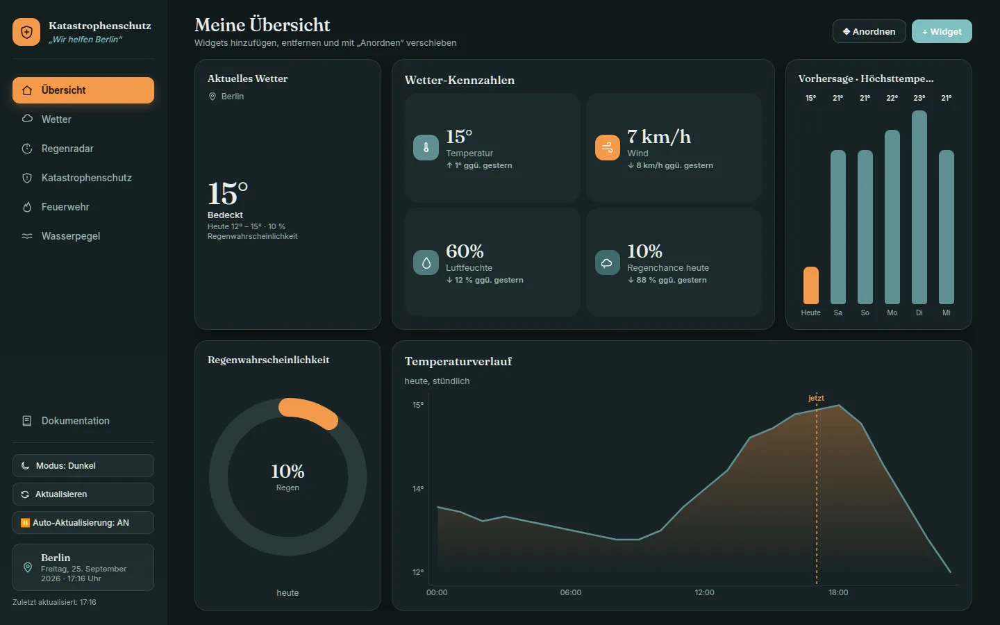
Alle Einstellungen werden automatisch im Browser gespeichert und sind beim nächsten Öffnen wieder da.
Seitenleiste & Bedienung
- Navigation
- Die Einträge oben wechseln die Seite. Der aktive Eintrag ist orange hinterlegt.
- Dokumentation
- Öffnet diese Anleitung in einem eigenen Fenster.
- Modus: Hell / Dunkel
- Wechselt das Farbschema. Ohne eigene Wahl richtet sich das Dashboard nach der Systemeinstellung.
- Sprache
- Das Auswahlfeld neben dem Farbmodus stellt Dashboard und Dokumentation auf eine andere Sprache um (derzeit Deutsch und English). Die Seite lädt dabei kurz neu, alle Einstellungen bleiben erhalten. Ohne eigene Wahl gilt die Sprache des Browsers.
- Aktualisieren
- Lädt Wetter, Radar, Warnungen, Feuerwehr- und Pegeldaten sofort neu.
- Auto-Aktualisierung
- Bei „AN“ werden alle Daten alle 5 Minuten neu geladen. Ein Klick schaltet die Funktion aus oder wieder an.
- Standort & Datum
- Zeigt den aktuell gewählten Wetterort sowie Datum und Uhrzeit. Darunter steht, wann zuletzt aktualisiert wurde.
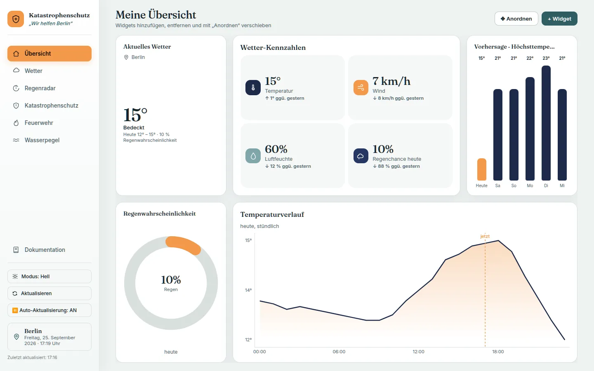
Übersicht
„Meine Übersicht“ ist frei zusammenstellbar. Beim ersten Start enthält sie Aktuelles Wetter, Wetter-Kennzahlen, Vorhersage, Regenwahrscheinlichkeit und Temperaturverlauf.
- Widget hinzufügen: „+ Widget“ öffnet den Katalog. Ein Klick auf einen Eintrag blendet das Widget ein.
- Widget entfernen: Im Anordnen-Modus erscheint oben rechts am Widget ein „ד.
- Einklappen: Der Pfeil am Widget klappt es auf die Titelzeile zusammen. Die übrigen Widgets nutzen den frei gewordenen Platz.
- Zurücksetzen: „↺ Zurücksetzen“ stellt nach einer Rückfrage die Standard-Auswahl und -Anordnung wieder her.
Widgets, die Daten einer anderen Seite zeigen (z. B. Wetter-Kennzahlen), sind Live-Kopien und aktualisieren sich automatisch mit.
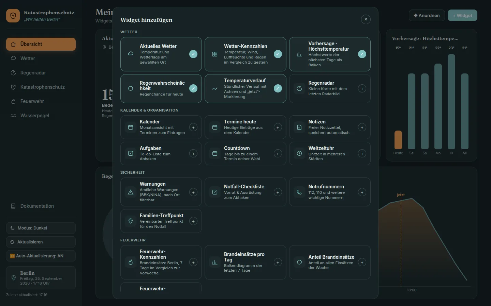
Anordnen & Größe ändern
Jede Seite hat oben die Schaltflächen ↺ Zurücksetzen, ✥ Anordnen und + Widget.
- „✥ Anordnen“ anklicken. Widgets und Bereiche bekommen einen gestrichelten Rahmen und oben einen Griff ⋮⋮⋮.
- Am Griff ziehen und das Widget an der gewünschten Stelle loslassen. Es landet vor oder hinter dem Widget, über dem der Mauszeiger steht.
- Auf den Unterseiten lassen sich alle Widgets frei verschieben, auch einzelne Kennzahl-Karten, und zwar in jede Reihe und Spalte. Ziehst du ein Widget in den oberen Griffbereich einer Spalte, landet es neben dieser Spalte.
- Wird ein Bereich leer, erscheint dort „Hierher ziehen“ als Ablagefläche.
- Die Größe änderst du mit dem Griff unten rechts am Widget.
- „✓ Fertig“ beendet den Modus. Alles wird automatisch gespeichert.
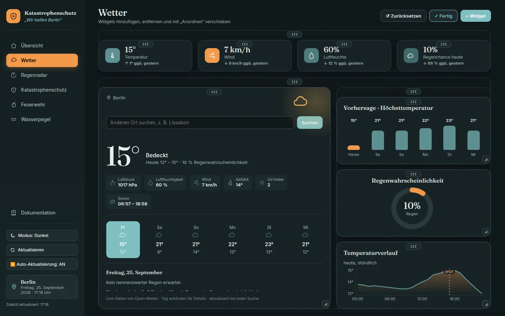
Die Unterseiten haben ein festes Standard-Layout. „↺ Zurücksetzen“ stellt es nach einer Rückfrage wieder her, auch für Widgets, die in andere Bereiche verschoben wurden.
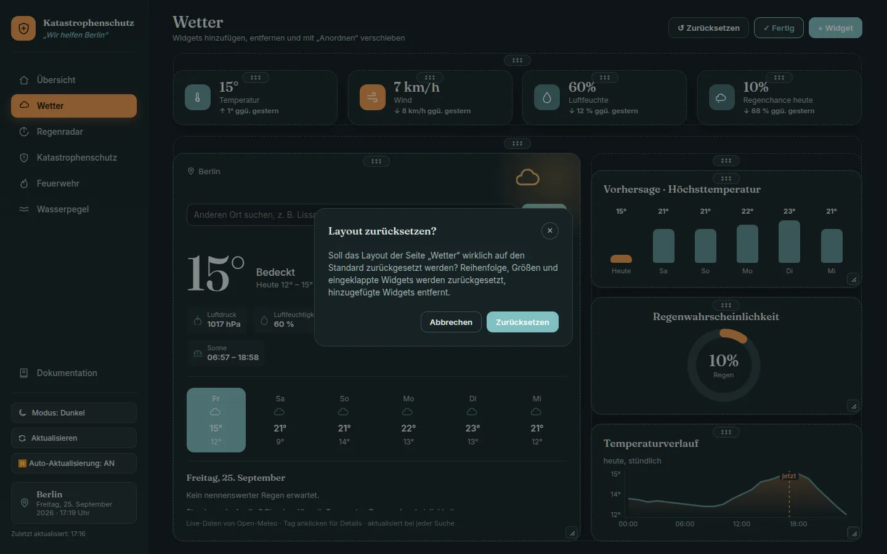
Die Seiten
Wetter
Aktuelles Wetter mit Temperatur, Wetterlage, Luftdruck, Luftfeuchtigkeit, Wind, gefühlter Temperatur, UV-Index und Sonnenzeiten. Dazu kommen eine 6-Tage-Vorhersage, ein Stundenverlauf und die Kennzahlen im Vergleich zu gestern. Über das Suchfeld lässt sich ein anderer Ort wählen, z. B. „Lissabon“. Ein Klick auf einen Tag zeigt dessen Details.
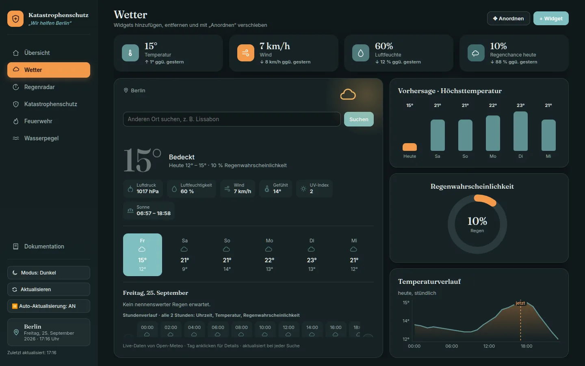
Regenradar
Interaktive Karte mit Niederschlag. Ort suchen oder eine Schnellwahl (Berlin, Potsdam, München, Hamburg) anklicken. Unter „Niederschlag“ wählst du die Quelle:
- RainViewer · Verlauf: Radarbilder der letzten Zeit. Mit ▶ abspielen oder mit dem Schieberegler durchblättern. Kostenlos bis Zoomstufe 7, darüber werden die Kacheln vergrößert.
- OpenWeather · aktuelle Karte: aktuelle Niederschlagskarte. Sie funktioniert nur mit einem API-Key (siehe Entwicklung).
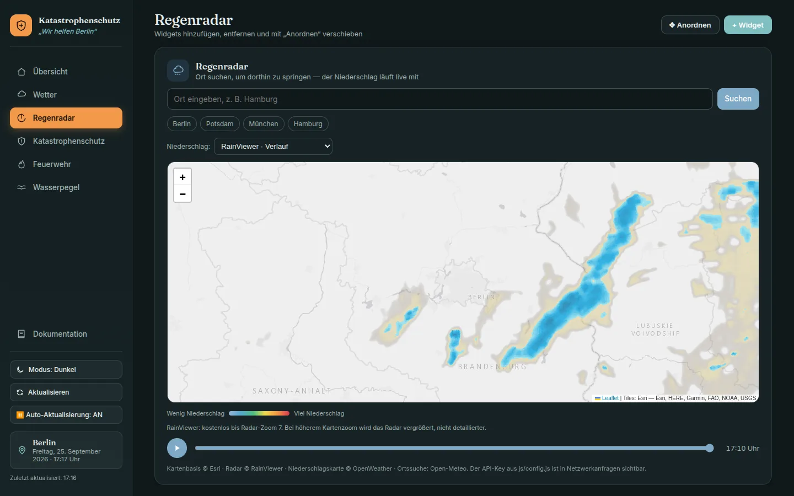
Katastrophenschutz
Amtliche Warnungen des Bundes (MoWaS, KATWARN, BIWAPP, DWD, Hochwasserzentralen), nach Ort filterbar und nach Schwere sortiert. Dazu gibt es die wichtigsten Notrufnummern, ein Feld für den Familien-Treffpunkt und eine Notfall-Checkliste für Vorrat und Ausrüstung zum Abhaken.
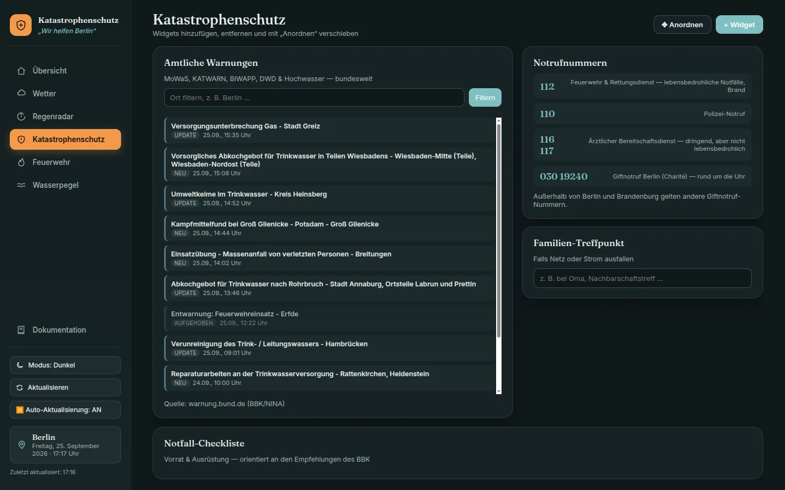
Feuerwehr
Brandeinsätze der Berliner Feuerwehr der letzten 7 Tage: Kennzahlen im Vergleich zur Vorwoche, Einsätze pro Tag (der Spitzentag ist orange), Anteil an allen Einsätzen sowie eine Tagesübersicht mit Bränden, Hilfeleistungen und Eintreffzeit. Mit „CSV exportieren“ lädst du die Tabelle als Datei herunter.
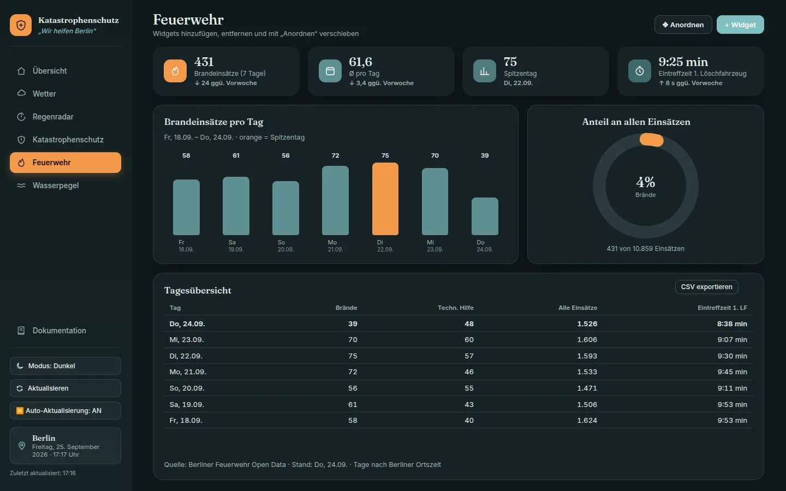
Wasserpegel
Aktuelle Wasserstände der Bundeswasserstraßen, Standard ist Berlin-Köpenick. Andere Pegel findest du über die Suche (z. B. „Dresden“) oder in der Liste der Berliner Pegel. Der Verlauf zeigt die letzten 7 Tage mit den Richtwerten MNW (mittleres Niedrigwasser), MW (Mittelwasser) und MHW (mittleres Hochwasser).
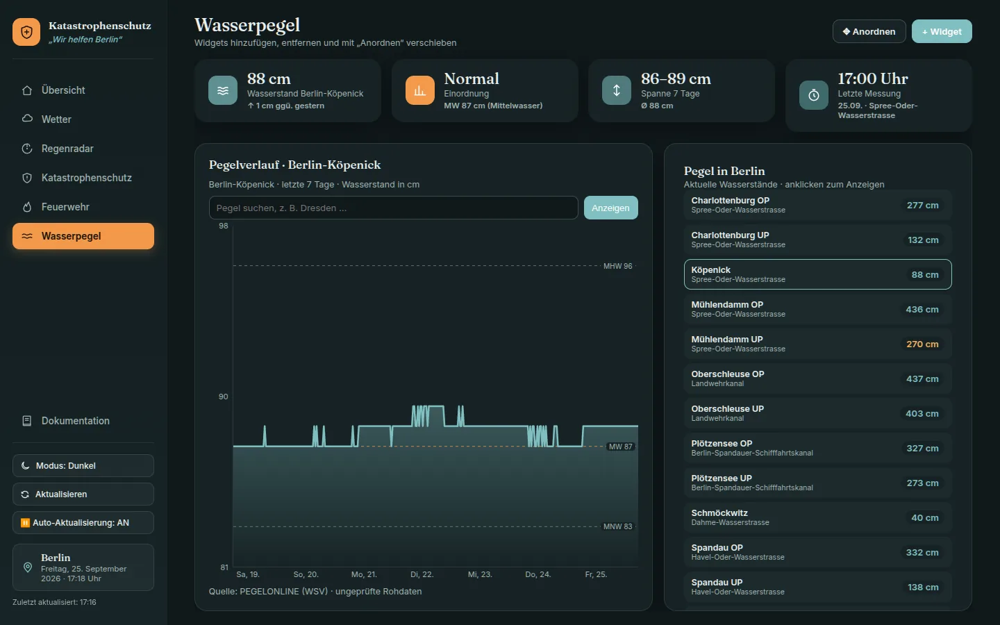
Widget-Katalog
Diese Widgets lassen sich auf der Übersicht und auf jeder Unterseite über „+ Widget“ einblenden.
| Gruppe | Widget | Inhalt |
|---|---|---|
| Wetter | Aktuelles Wetter | Temperatur und Wetterlage am gewählten Ort |
| Wetter-Kennzahlen | Temperatur, Wind, Luftfeuchte und Regen im Vergleich zu gestern | |
| Vorhersage · Höchsttemperatur | Höchstwerte der nächsten Tage als Balken | |
| Regenwahrscheinlichkeit | Regenchance für heute | |
| Temperaturverlauf | Stündlicher Verlauf mit „jetzt“-Markierung | |
| Regenradar | Kleine Karte mit dem letzten Radarbild | |
| Kalender & Organisation | Kalender | Monatsansicht mit Terminen zum Eintragen |
| Termine heute | Heutige Einträge aus dem Kalender | |
| Notizen | Freier Notizzettel, speichert automatisch | |
| Aufgaben | To-do-Liste zum Abhaken | |
| Countdown | Tage bis zu einem Termin deiner Wahl | |
| Weltzeituhr | Uhrzeit in mehreren Städten | |
| Sicherheit | Warnungen | Amtliche Warnungen (BBK/NINA), nach Ort filterbar |
| Notfall-Checkliste | Vorrat und Ausrüstung zum Abhaken | |
| Notrufnummern | 112, 110 und weitere wichtige Nummern | |
| Familien-Treffpunkt | Vereinbarter Treffpunkt für den Notfall | |
| Feuerwehr | Feuerwehr-Kennzahlen | Brandeinsätze der letzten 7 Tage im Vergleich zur Vorwoche |
| Brandeinsätze pro Tag | Balkendiagramm der letzten 7 Tage | |
| Anteil Brandeinsätze | Anteil an allen Einsätzen der Woche | |
| Feuerwehr-Tagesübersicht | Tabelle mit Bränden, Hilfeleistungen und Eintreffzeit | |
| Wasserpegel | Pegel-Kennzahlen | Aktueller Wasserstand, Einordnung und 7-Tage-Spanne |
| Pegelverlauf | Wasserstand der letzten 7 Tage mit Mittelwerten |
Smartphone & Tablet
Das Layout passt sich an die Bildschirmgröße an und nutzt bis zu 27"-Monitoren (2560 px) die volle Breite. Unter 760 px Breite:
- Die Seitenleiste wird zur Kopfzeile. Das Menü öffnest du über die Schaltfläche ☰.
- Widgets stehen untereinander, und die Seite scrollt.
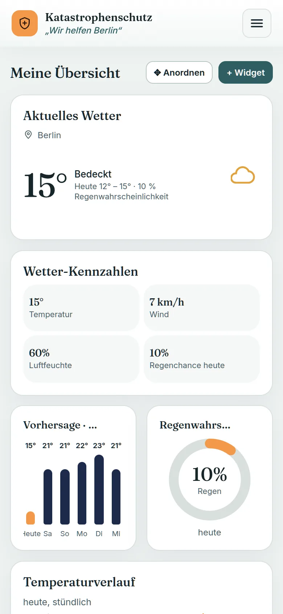
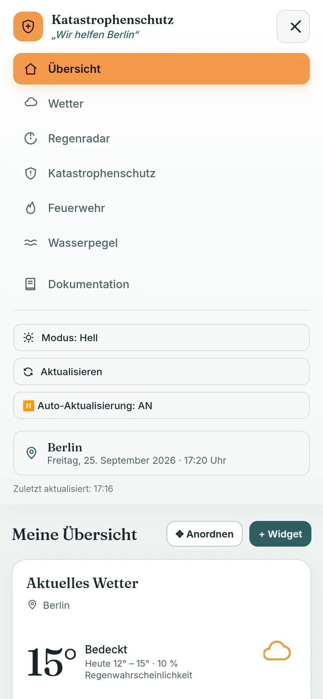
Deine Daten
Termine, Notizen, Aufgaben, Checkliste, Treffpunkt, Countdown, Layout und Farbmodus werden nur im lokalen Speicher deines Browsers (localStorage) abgelegt. Es gibt kein Benutzerkonto und keinen eigenen Server, der diese Daten speichert.
- Die Daten gelten nur für diesen Browser auf diesem Gerät.
- Wer die Website-Daten im Browser löscht, setzt das Dashboard komplett zurück.
- Für Wetter, Radar, Warnungen, Feuerwehr und Pegel ruft der Browser öffentliche Dienste ab (siehe Datenquellen). Dabei werden nur Ortsnamen bzw. Koordinaten übertragen.
Hilfe bei Problemen
Fällt eine Datenquelle aus, zeigt das betroffene Widget eine Meldung mit dem Grund und einem Knopf „Erneut versuchen“. Bereits geladene Daten bleiben dabei sichtbar („Angezeigt wird der letzte Stand“). Nach „Aktualisieren“ steht unten in der Seitenleiste rot, welche Bereiche nicht aktualisiert werden konnten.
- „keine Internetverbindung“
- Das Gerät ist offline. Sobald die Verbindung zurück ist, lädt das Dashboard automatisch neu.
- „zu viele Anfragen“
- Der Wetterdienst begrenzt viele Abrufe in kurzer Zeit. Eine Minute warten und erneut versuchen.
- „der Dienst antwortet nicht“ / „Dienst gerade gestört“
- Der externe Dienst ist langsam oder ausgefallen. Nach 12 Sekunden wird abgebrochen und einmal automatisch wiederholt. Später erneut versuchen.
- Keine Warnungen
- Die Warnungen laufen über den Server (
/api/warnings). Beim direkten Öffnen derindex.htmloder mit „Live Server“ fehlt diese Schnittstelle. Starte das Projekt stattdessen mitnode dev-server.js. „Unvollständig: …“ bedeutet, dass einzelne Warnsysteme gerade nicht erreichbar sind. - OpenWeather-Karte leer
- Es ist kein oder ein ungültiger API-Key eingetragen. Das Regenradar funktioniert dann nur mit RainViewer.
- „Karte nicht verfügbar“
- Die Kartenbibliothek Leaflet konnte nicht geladen werden (z. B. durch einen Werbeblocker oder Netzwerkfilter). Der Rest des Dashboards funktioniert weiter.
- „Nicht gespeichert“
- Der Browser erlaubt kein Speichern (privater Modus, Speicher voll). Notizen, Layout und Einstellungen gehen dann beim Schließen verloren.
- Layout durcheinander
- Im Anordnen-Modus auf „↺ Zurücksetzen“ klicken.
- Port schon belegt
dev-server.jsmeldet das und beendet sich. Anderen Port wählen:PORT=3001 node dev-server.js.
Architektur & Dateien
Das Dashboard ist eine statische Single-Page-Anwendung aus HTML, CSS und Vanilla JavaScript ohne Build-Schritt und ohne Framework. Nur die amtlichen Warnungen brauchen eine kleine Serverfunktion, weil warnung.bund.de keine CORS-Header sendet.
| Datei | Aufgabe |
|---|---|
index.html | Struktur aller Seiten (.page), Seitenleiste, Dialoge für „Widget hinzufügen“ und „Zurücksetzen“ |
css/style.css | Alle Styles: Farbvariablen für Hell/Dunkel, Seitenleiste, Widgets, Container-Queries, Mobile-Ansicht |
js/app.js | Gesamte Logik: Navigation, Theme, Datenabrufe, Diagramme, Widget-Katalog, Layout-System |
js/i18n.js | Mehrsprachigkeit: Übersetzungsfunktion t(), Sprachwahl, Sprach-Auswahlfeld |
js/lang/<code>.js, js/lang/docs.<code>.js | Texte des Dashboards bzw. der Dokumentation pro Sprache (de, en) |
js/config.js | Optionaler OpenWeather-Key. Steht in .gitignore, Vorlage ist js/config.example.js |
api/warnings.js | Serverless-Funktion (Vercel): holt MoWaS, KATWARN, BIWAPP, DWD und LHP und liefert sie gebündelt als JSON |
dev-server.js | Lokaler Node-Server: liefert die Dateien aus und stellt /api/warnings bereit |
docs.html, css/docs.css, js/docs.js, img/docs/ | Diese Dokumentation mit Screenshots (WebP, 1440 × 900 bzw. Smartphone 390 px bei doppelter Auflösung) |
.cursor/skills/, .claude/skills/ | Projekt-Skills für den KI-Assistenten. Per .vercelignore vom Deployment ausgeschlossen |
Ablauf in js/app.js
- Uhr, Navigation (
NAV_CATEGORIES) und Farbmodus initialisieren. - Daten laden:
loadWeatherForPlace,loadRadar,loadDisasterWarnings,loadFireData,loadWaterData. - Widget-Boards aufbauen (
OVERVIEW_WIDGETS,mountBoardWidget) und das gespeicherte Layout anwenden (initLayout). refreshDashboardDatalädt alles neu, manuell oder alle 5 Minuten (AUTO_REFRESH_INTERVAL_MS), und löst danach das Eventdashboard-refreshaus.
Entwicklung & Deployment
Lokal starten
node dev-server.js
# → http://localhost:3000 (anderer Port: PORT=3123 node dev-server.js)Es werden keine Abhängigkeiten benötigt, nur Node.js.
OpenWeather-Key (optional)
cp js/config.example.js js/config.js
# eigenen Key in js/config.js eintragenDer Key wird im Browser verwendet und ist in den Netzwerkanfragen sichtbar. js/config.js darf nicht committet werden.
Deployment auf Vercel
- Die statischen Dateien werden direkt ausgeliefert,
api/warnings.jsläuft als Serverless-Funktion unter/api/warnings. - Die Antwort wird mit
Cache-Control: s-maxage=60, stale-while-revalidate=300gecacht. .vercelignoreschließt.cursor/und.claude/vom Upload aus.
Datenquellen & APIs
| Bereich | Endpunkt | Hinweise |
|---|---|---|
| Wetter | api.open-meteo.com/v1/forecast | forecast_days=6&past_days=1. Der Vortag wird abgetrennt (splitOffYesterday) und für den Vergleich „gegenüber gestern“ genutzt |
| Ortssuche | geocoding-api.open-meteo.com/v1/search | Erster Treffer, Sprache Deutsch |
| Radar | api.rainviewer.com/public/weather-maps.json | Liste der Radarbilder, Kacheln als Leaflet-Layer, Animation alle 850 ms |
| Niederschlag | tile.openweathermap.org/map/precipitation_new | Nur mit Key aus js/config.js |
| Karte | server.arcgisonline.com/…/World_Light_Gray_Base | Hintergrundkacheln von Esri |
| Warnungen | /api/warnings → warnung.bund.de/api31/<quelle>/mapData.json | Quellen: mowas, katwarn, biwapp, dwd, lhp. Timeout 8 s pro Quelle; ausgefallene Quellen stehen im Header X-Warnings-Failed, erst wenn alle ausfallen gibt es HTTP 502 |
| Feuerwehr | raw.githubusercontent.com/Berliner-Feuerwehr/BF-Open-Data/…/BFw_mission_data_daily.csv | Tägliche CSV, ausgewertet werden die letzten 7 Tage und die Vorwoche |
| Wasserpegel | www.pegelonline.wsv.de/webservices/rest-api/v2 | Stationen, aktueller Wert, 7-Tage-Messreihe, Kennwerte MNW/MW/MHW |
Fehlerbehandlung
Datenabrufe: fetchData(url, optionen)
Alle Abrufe in js/app.js laufen über diese Funktion. Sie bricht nach FETCH_TIMEOUT_MS (12 s) per AbortController ab und wiederholt bei Timeout, Netzfehler, HTTP 429 und 5xx einmal (mit Retry-After bzw. kurzer Wartezeit). Fehler werden als FetchError mit kind geworfen:
kind | Bedeutung | Text von describeError |
|---|---|---|
offline | navigator.onLine ist false | keine Internetverbindung |
timeout | Abbruch nach Timeout | der Dienst antwortet nicht |
network | DNS, CORS, blockiert | Dienst nicht erreichbar |
http | Status ≠ 2xx, in status | je nach Status (429, 401/403, 404, 5xx) |
data | kein gültiges JSON oder Pflichtfelder fehlen (dataError()) | Antwort unvollständig oder fehlerhaft |
Muster für einen Loader
async function loadX() {
try {
const data = await fetchData(URL, { source: "X" });
if (!data.items) throw dataError("X", "keine Einträge");
render(data);
return true;
} catch (err) {
reportError("X", err); // console.warn mit Quelle
renderRetry(el, `X nicht verfügbar – ${describeError(err)}.`, loadX);
return false; // alte Daten bleiben stehen
}
}refreshDashboardDatanutztPromise.allSettledund wertet die Rückgabetrue/falseaus. Fehlgeschlagene Quellen erscheinen in#refreshErrorsund bei manuellem Klick als roter Toast (showToast(text, "error")). Parallele Aufrufe werden zusammengefasst.- Die Events
offline/onlinezeigen einen Hinweis bzw. starten eine Aktualisierung. storageSet(key, value)ersetztlocalStorage.setItemund meldet einmalig, wenn Speichern nicht möglich ist.- Wirft ein Widget beim Start eine Exception, zeigt nur dieses Widget eine Fehlermeldung (
mountBoardWidget). - Ohne Leaflet (
LEAFLET_AVAILABLE) ersetzt ein PlatzhalterL, damit das restliche Skript weiterläuft. - Globale Handler für
errorundunhandledrejectionprotokollieren unerwartete Fehler und zeigen höchstens alle 15 s einen Hinweis. - Serverseitig:
api/warnings.jsantwortet mit 405 bei falscher Methode und 502 als JSON,dev-server.jsmit 400/403/404/500 statt abzustürzen.
Layout-System
Container und Elemente
Jede Seite besteht aus Containern (die Seite selbst und alle Klassen aus LAYOUT_GROUP_CLASSES, z. B. Reihen wie .stat-row, .detail-row und Spalten wie .weather-side) und Elementen (Panels, Kennzahl-Karten, Gruppen). Elemente werden über id oder ein automatisch vergebenes data-layout-id identifiziert.
- Reihenfolge:
saveLayoutOrderundapplySavedLayoutOrderspeichern und laden pro Container die Reihenfolge der Elemente. - Freies Verschieben:
startRoamDragermittelt mitdocument.elementsFromPointdas Ziel. Ob das Element davor oder dahinter landet, hängt davon ab, ob der Zeiger vor oder hinter der Mitte des Ziels liegt. In eine.stat-rowpassen nur Kennzahl-Karten, in das Widget-Raster (.overview-grid) nur hinzugefügte Widgets. Alle anderen Container nehmen jedes Element auf. Der Zielcontainer wird indashboard-widget-placesgespeichert, sofern er nicht der Ursprungscontainer ist. - Leere Container erhalten die Klasse
.layout-emptyund erscheinen im Anordnen-Modus als „Hierher ziehen“. Kennzahl-Reihen setzen--stat-colsauf die Anzahl ihrer Karten. - Größe: In Flex-Containern steuert
data-layout-growden Anteil (Mindestgröße 260 × 170 px). Im Widget-Raster speicherndata-col-frac(Anteil der Spalten) unddata-row-weightdie Größe, damit sie auf jeder Bildschirmbreite gleich wirkt. - Zurücksetzen: Jeder Container merkt sich seine Standardreihenfolge (
_defaultOrder).resetPageLayoutstellt diese Reihenfolge wieder her und löscht die gespeicherten Plätze und Größen.
Skalierung mit Container-Queries
Widget-Inhalte skalieren über CSS-Container-Queries statt über die Fenstergröße: .ov-body (ovbody), Kennzahl-Karten (statcard) und Diagramme (chartcard). Schriftgrößen nutzen cqh/cqw mit clamp(). Bei sehr kleinen Widgets werden Nebenelemente wie Icons, Beschriftungen oder Datumszeilen ausgeblendet.
Live-Kopien (Mirror-Widgets)
Widgets mit mirror klonen DOM-Teile einer anderen Seite (cloneForMirror, IDs erhalten ein Suffix) und aktualisieren sich bei Änderungen der Quelle. Bei Kennzahl-Reihen zeigt die Kopie auch Karten, die woanders hin verschoben wurden.
Speicherschlüssel (localStorage)
| Schlüssel | Inhalt |
|---|---|
dashboard-theme | light oder dark. Fehlt der Wert, gilt die Systemeinstellung |
dashboard-lang | Sprachcode, z. B. de oder en. Fehlt der Wert, gilt die Browsersprache |
dashboard-auto-refresh | Auto-Aktualisierung an/aus |
dashboard-overview-widgets | Widget-Typen der Übersicht |
dashboard-page-widgets-<seite> | Zusätzliche Widgets einer Unterseite |
dashboard-layout-<container> | Reihenfolge der Elemente in einem Container |
dashboard-layout-sizes | Größen (grow, frac, weight) pro Element |
dashboard-widget-places | In andere Container verschobene Elemente: { elementId: "seite:container" } |
dashboard-collapsed | IDs eingeklappter Widgets |
dashboard-cal-events | Kalendertermine |
dashboard-widget-notes, -todo, -countdown, -checklist | Inhalte der jeweiligen Widgets |
dashboard-meeting-point | Familien-Treffpunkt |
dashboard-water-station | Gewählter Pegel (UUID). Standard ist Berlin-Köpenick |
Erweitern
Neues Widget
Einen Eintrag in OVERVIEW_WIDGETS (js/app.js) ergänzen und Titel und Beschreibung in jeder Sprachdatei eintragen. Das Widget erscheint dann automatisch im Katalog jeder Seite.
// js/lang/de.js (und entsprechend en.js)
"widget.mein-widget.title": "Mein Widget",
"widget.mein-widget.desc": "Kurze Beschreibung für den Katalog",
// js/app.js
"mein-widget": {
group: "calendar", // Gruppe im Katalog (Schlüssel groups.calendar)
icon: OVERVIEW_ICONS.notes,
mount: mountMeinWidget, // oder: mirror: ["#quellElement"]
wide: true, // optional: startet breiter
},
function mountMeinWidget(body) {
body.innerHTML = `<div class="mein-inhalt">${t("widget.mein-widget.empty")}</div>`;
const timer = setInterval(update, 60000);
return () => clearInterval(timer); // optional: Aufräumen beim Entfernen
}Größen im Widget möglichst mit Container-Einheiten (cqh, cqw) innerhalb von .ov-body angeben, damit das Widget beim Ändern der Größe mitskaliert.
Neue Seite
- In
index.htmlein<div id="meinePage" class="page">mit der.overview-bar(Titel und die drei Schaltflächen) anlegen. - Am Ende der Seite das Widget-Raster
<div class="overview-grid" id="meinePageWidgets" hidden></div>einfügen. Die ID muss<Seiten-ID>Widgetslauten, damit „+ Widget“ funktioniert. - In
NAV_CATEGORIESeinen Eintrag mittarget: "meinePage"und einem SVG-Icon ergänzen. Den Seitennamen alsnav.<id>in jede Sprachdatei eintragen, sichtbare Texte der Seite mitdata-i18nauszeichnen. - Eigene Reihen oder Spalten, die anordenbar sein sollen, in
LAYOUT_GROUP_CLASSESeintragen. Danach nimmt das Layout-System (Anordnen, Zurücksetzen) die Seite beim Start automatisch auf.
Mehrsprachigkeit
Alle sichtbaren Texte kommen aus Sprachdateien. js/i18n.js wählt die Sprache in dieser Reihenfolge: gespeicherte Wahl (dashboard-lang), Browsersprache, Deutsch. Fehlt ein Text in einer Sprache, wird der deutsche verwendet.
- In JavaScript:
t("weather.loadingFor", { place: "Berlin" }). Platzhalter stehen in geschweiften Klammern im Text. - In HTML:
data-i18n="schlüssel"setzt den Text,data-i18n-htmlerlaubt Auszeichnungen,data-i18n-attr="placeholder=schlüssel;aria-label=schlüssel2"übersetzt Attribute. - Datum und Zahlen nutzen
I18N.locale()(z. B.de-DE,en-GB) mittoLocaleStringbzw.Intl. - Beim Sprachwechsel lädt die Seite neu. Ein zweites offenes Fenster (Dashboard oder Dokumentation) übernimmt die Sprache automatisch.
Neue Sprache hinzufügen
js/lang/en.jsnach z. B.js/lang/fr.jskopieren, Code, Name und Locale anpassen und alle Texte übersetzen:I18N.register("fr", { name: "Français", locale: "fr-FR", strings: { "nav.overview": "Aperçu", … }, });- In
index.htmlunddocs.htmlunter den anderen Sprachdateien<script src="js/lang/fr.js"></script>einfügen. - Optional die Dokumentation übersetzen:
js/lang/docs.en.jsnachdocs.fr.jskopieren, übersetzen und ebenfalls indocs.htmleinbinden. Ohne diese Datei erscheint die Dokumentation auf Deutsch.
Die neue Sprache erscheint danach automatisch im Auswahlfeld.
Lizenzen & Quellen
| Quelle | Lizenz / Bedingungen |
|---|---|
| Open-Meteo | CC BY 4.0, kostenlos für nicht-kommerzielle Nutzung. Ortsdaten von GeoNames (CC BY 4.0) |
| RainViewer | Kostenlose öffentliche API mit Namensnennung |
| OpenWeather | ODbL 1.0, Namensnennung „Weather data provided by OpenWeather“ |
| Esri World Light Gray Base | Esri-Nutzungsbedingungen. Namensnennung: Esri, HERE, Garmin, FAO, NOAA, USGS |
| Berliner Feuerwehr – BF-Open-Data | CC BY 4.0, © Berliner Feuerwehr |
| PEGELONLINE (WSV / ITZBund) | Datenlizenz Deutschland – Zero – 2.0 |
| warnung.bund.de (BBK, NINA) | Keine ausdrückliche Lizenz. Quelle: BBK und die jeweils herausgebende Stelle |
| Leaflet 1.9.4 | BSD 2-Clause |
| Schriften Inter und Fraunces | SIL Open Font License 1.1 |
Links zu allen Lizenztexten stehen in der README.md.